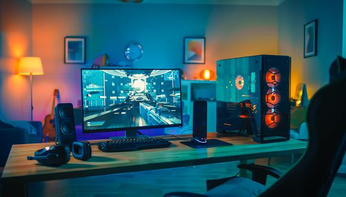
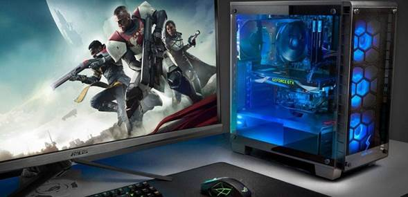
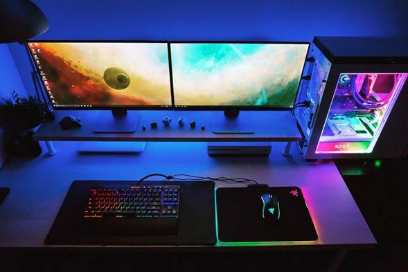
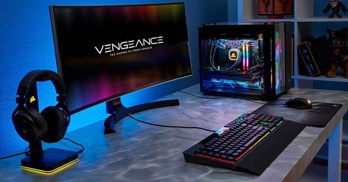

Un estudio realizado por Superdata Research indica
que la cantidad de gamers ha aumentado en los últimos años
llegando a cifras como las de 1,2 millones de jugadores en todo el mundo.
ventaja que han sabido aprovechar muy bien los fabricantes de computadores
quienes han integrado características únicas en la fabricación
de estos equipos diseñados exclusivamente para jugar.
CARACTERISTICAS

Si eres un verdadero gamer, sabes que la calidad de tu equipo
puede marcar la diferencia en la experiencia de juego. Nuestra guia
de optimización SEO te ayudaria a descubrir las caracteristicas
clave que debes buscar en un PC gamer de alta calidad, desde la
velocidad de procesamiento hasta la capacidad de almacenamiento y la
calidad de la tarjeta grafica. No pierdas mis tiempo buscando en
linea, sigue nuestros consejos y convierte tu PC en una
verdadera maquina de juego.
PROCESADOR (CPU)
La CPU es el pilar básico de cualquier ordenador por lo que debemos elegir
muy cuidadosamente su procesador, primero debemos elegir entre dos grandes marcas,
Intel y AMD. Esta decisición es actualmente mas personal que técnica, porque ambas
marcas cuentan con procesadores de alto rendimiento.
Entre los procesadores de gama alta de Intel, destacan i7 e i9. En lo que respecta a AMD,
recientemente lanza la serie Ryzen, que brinda un excelente rendimiento a un precio más bajo.
Independientemente del procesador que elijas, lo más importante para un juego es saber si
permite el overclocking, o lo mismo es que puedes configurar manualmente la CPU para lograr
un nivel de rendimiento muy superior al nivel de rendimiento marcado en las especificaciones.

VENTILACION
Para que nuestro equipo no se sobrecaliente y se mantenga siempre en un estado optimo es
indispensable la ventilación de la CPU y la tarjeta gráfica y sobre todo cuando se enfrentan
a situaciones de alto rendimiento.
Tengamos en cuenta que la mejor opción será siempre aquella que permita un buen flujo de circulación
del aire en el interior sin necesidad de poner una barrera entre la estática y la funcionalidad del
equipo.
MEMORIA RAM
En cualquier PC la RAM es una ficha importante, pero si hablamos de los gamer se hace esencialmente
necesaria. Esto debido a que cuando se trata de videojuegos que requieren una alta velocidad, una RAM
potente con baja latencia hace que podamos ver todos los fotogramas y tengamos una experiencia de juego fluida.
TARJETA GRAFICA

Los computadores utilizados para el diseño gráfico, modelado 3D y los PC gamer a diferencia de
cualquier ordenador convencional requieren de una tarjeta gráfica de alta potencia, la razón es
porque los videojuegos actuales, que cuentan con alta resolución, necesitan de un alto rendimiento
gráfico, que puede llegar a quemar la tarjeta grafica, si esta no tiene la potencia suficiente.
A la hora de elegir una buena tarjeta ten en cuenta la nomenclatura de la gama y la cantidad de RAM
integrada. En cuanto a la primera entre más elevados sean los dos ultimos dígitos será mucho mejor
y en cuanto a la RAM, de la misma forma, será más potente cuanta más memoria tenga. tener en cuent
a que siempre debes priorizar la gama frente a la memoria.
ALMACENAMIENTO
En la actualidad, la mayoría de los ordenadores ya cuentan con memorias de estado sólido SSD, que
permiten velocidades de carga mucho más rápidas y mejorarán la experiencia en los juegos.
El almacenamiento en sí no es tan importante, pero sí es determinante el tipo de disco y la
velocidad a la que trabaje.

CAJA Y ESTATICA
En términos de estática, la computadora del jugador muestra colores cada vez más vivos y llamativos,
lo que es completamente diferente al diseño sobrio de cualquier PC tradicional.
En los PC para juegos, la caja juega un papel cada vez más hermoso. En cuanto a las funciones que
debe admitir, la cantidad de ventiladores y su ubicación son prominentes, por lo que el flujo de aire
es mejor para enfriar adecuadamente los componentes internos. Además, debes considerar si tiene una
conexión en la parte frontal, como un USB o un lector de tarjetas.
PLACA BASE
No debemos caer en el error de elegir una placa base que no soporte determinadas piezas necesarias.
Quizás no sea lo fundamental de un ordenador gamer pero las características que debe tener son:
la cantidad de puertos traseros que sean necesarios, el tipo de puertos y las velocidades que
soporten, así como, la capacidad de memoria RAM máxima que podríamos llegar a emplear.
SITIOS PARA COTIZAR TU PC